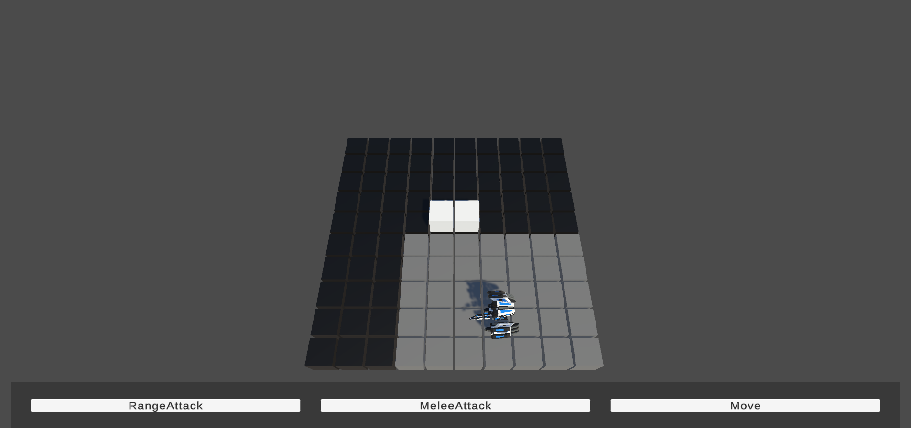
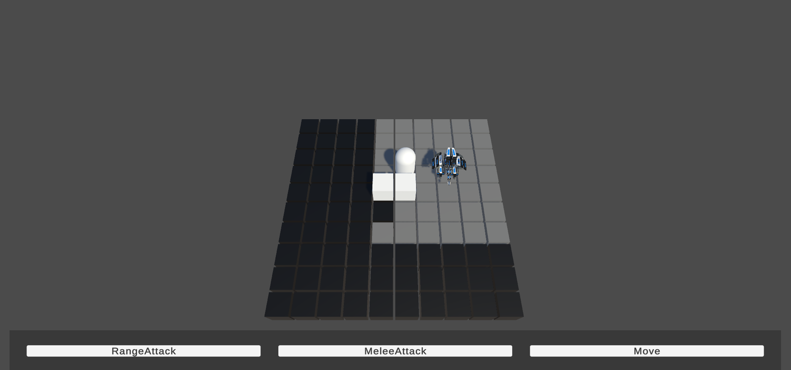
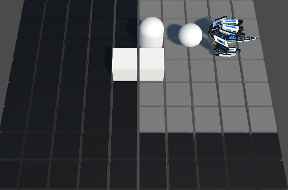

A brief overview of what I am implementing in Mech-Geon.
Player Actions
So far, in the game you can move in a board, and perform three type of actions (this amount of actions depends on the character, equipement and upgrades)
Fog of War
The player vision is affected by a fog of war, so you can only see the characters that are not blocked by obstacles (the capsule if the enemy and the white cubes a wall). This vision range can be upgraded like the player actions.

Range attack placeholder
This random ball if the placeholder for the range attack. The idea with the attack system is that you will have 2 types of attacks: point and click, where you point the character that you want to attack (only if is in your vision range) and the Area of Effect attacks where you can aim to a desired point of the board and damage all the units in that area, like an explosion.